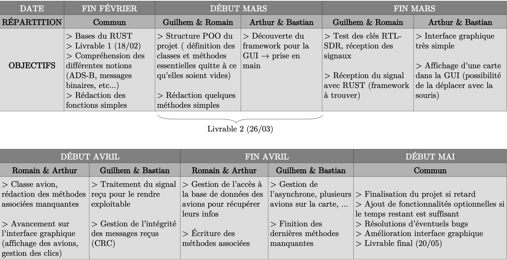

Storyline
Le rétro planning original était:

Mais des difficultés son apparu pendant le projet, ce qui nous a forcé à le modifier légèrement.
Réunion du 27/01/22
Création du repertoire Git (licence GNU GPL v3). Discussion sur nos objectifs concernant le projet, livrable minimal, livrable amélioré. Langage : RUST (formation en cours) plus compliqué à prendre en main que Java/Python mais plus optimisé pour notre projet.
Discussion sur la structure :
--> Classe radar :
- Qui hérite de thread
- S'éxécute à l'infini
- Reçoit des essages en permanence et créée un objet avion dès qu'il est détecté
- Extrait le message en cherchant le préambule classique de l'ADS-B
--> Classe Avion :
- Message en binaire
- Data : 56 bits, soit la vitesse, soit le numéro de vol, soit les coordonnées
- Traduit les données
- Crée une carte toutes les X secondes
Réunion du 10/02/22
Discussion autour du projet, notamment autour de la structure du projet ainsi que des grandes étapes, et autour du rétroplanning que nous allons présenter dans le premier livrable.
Début du code de fonctions simples pour prendre en main RUST :
- Une fonction qui découpe un message binaire de 56 bits afin de récupérer les sections de bits correspondant aux informations sur le vol
- Une fonction qui gère la base de données contenant les informations relatives aux avions (modèle, moteur, etc)
Réunion du 17/02/22
Discussion sur le livrable 1 à rendre dans la semaine.
Écriture de la présentation du projet avec les objectifs (livrable minimal et idéal), diagramme de séquence et rétroplanning.
La fonction callsign() qui découpe et traduit le message de 56 bits.
Le groupe continue son apprentissage du RUST.
Réunion du 24/02/22
- Le premier livrable a été téléversé (18/02) sur moodle.
- Code des fonctions permettant d'extraire la position (latitude, longitude) du message.
- Discussion pour l'interface graphique : nous allons commencer à regarder imgui.
Réunion du 03/03/22 (point rencontre)
- Préférable de scinder le projet en deux sous-projets : 'backend' et 'frontend'. Création du second répertoire trackui dans ce but précis.
- Discussion autout de l'interface graphique : on part sur imgui avec l'utilisation de ZeroMQ pour séparer le 'backend' et le 'frontend'.
- Réception des messages : voir le framword rtlsdr_mt (pas actualisé) sinon se tourner vers soapysdr.
- Choix d'utiliser des array de booléens pour représenter les messages binaires plutôt que des string pour gain de mémoire.
- Discussion autour du livrable 2 à rendre la semaine d'après.
Réunion du 16/03/22 (point rencontre)
- Discussion autour des bases de données : se tourner vers SQLLite3 plutôt.
- Clarifier le code aux endroits où il devient un peu lourd et peu intuitif.
- Regarder des librairies de logging pour éventuellement générer des logs.
- Problèmes réglé pour imgui.
- Discussion autour de l'interface graphique, il faut choisir entre :
- imgui qui fonctionnerait avec ZeroMQ : il faut chercher comment générer une carte (openstreetmap), les tiles
- interface web avec HTML/CSS, Javascript : utilisation de leaflet pour générer facilement une carte, utiliser des websockets pour communiquer entre back/front
Réunion du 29/03/2022 (rapide) :
- Choix d'utiliser Yew et leaflet-rs pour l'interface graphique
- Prise en main de Yew et leaflet-rs, mais beaucoup de difficultés sont rencontrées avec l'utilisation de cette bibliothèque.
- ZeroMQ : grâce à l'exemple fournit par Rémy Grünblatt un code minimal d'emission/reception serveur/client a été mis au point et fonctionne correctement (pour l'instant en local).
Objectifs pour la semaine prochaine :
- Réussir à afficher une icone d'avion et à gérer sa position sur la carte
- Gérer proprement la réception des messages côté client
- Gérer l'affichage des données côté client
Réunion du 14/04/2022 (point rencontre) :
- Discuission autour de l'interface graphique, notamment de Yew qui nous pose plusieurs problèmes : on laisse tomber le rust pour le web et on part sur du web pur / javascript.
- Discussion autour de l'organisation du projet : il faut que chacun s'organise pour participer au projet (frontend, backend, connexion à internet, rapport, slides soutenance etc...).
- Discussion autour de la forme du rapport : possibilité d'utiliser des fichiers markdown puis de les convertir avec pandoc.
- La redistribution des rôles :
--> Guilhem : termine le backend côté web
--> Romain : s'occupe du côté serveur, mise en place d'une vm pour pouvoir faire passer les sockets par internet et utiliser plusieurs antennes
--> Artur : s'occupe du frontend, apparence de l'interface web
--> Bastian : rédige le rapport sous la forme de rustbook